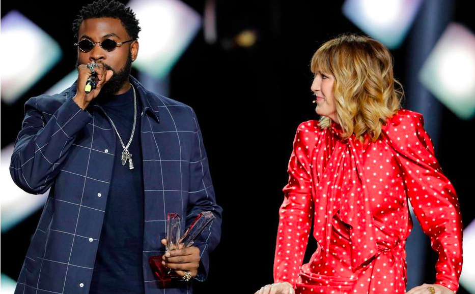

Le rap ;
c’est la première chose à laquelle on pense quand nous entendons le
mot musique dans le Hip Hop.
Le rap est
une musique au rythme martelé, basé sur des paroles scandées. Le rap
a émergé dans les rues de New York. Les jeunes rappeurs
s’affrontaient en rappant sur des textes qu’ils avaient
préalablement écrits. Le gagnant était celui qui avaient le meilleur
texte et celui qui arrivait à mieux « clasher » son adversaire.
En France, Rap Contenders est un concept ayant mis en avant de nombres rappeurs durant des « clashs ». Dans cette vidéo, on peut voir les débuts du rappeur français Nekfeu en 2011 qui a pu propulser sa carrière grâce à sa participation.
Le rap est aussi très politisé. À
travers leurs textes, certains rappeurs dénoncent les inégalités
sociales, le racisme et les systèmes politiques.
En 2004, face à la montée de Front National dirigé par Marine Lepen, la rappeuse Diams écrit cette chanson pour cette dernière. Elle dénonce le racisme et la discrimination au sein de ce parti politique.
Clip de la chanson "Fuck the
police" du groupe de rap NWA, un groupe très célèbre de Compton dans les
années 90. Cette chanson dénonce le racisme au sein de la police. NWA
avaient performé cette chanson à Détroit en 1989 alors qu'ils avaient
interdiction de la performer. Cela leur a apporté beaucoup de problème
avec le FBI.
Selon le journal les échos, Parmi
les 200 albums les plus écoutés l'an dernier, 86 appartiennent à la
catégorie dite des « musiques urbaines » en 2018, contre 56 en 2016.
Le rap est un genre musical le plus écouté sur les plateformes de
streaming. Il est principalement écouté par des jeunes ce qui fait que
dans le classement des meilleures ventes d’album on retrouve le rap.
Ainsi, 16 des 42.5 milliards de titres écoutées en streaming en 2018
en France appartenaient à la catégorie des musiques urbaines. Ce
chiffre a triplé en 2019 et il continue de progresser en permanence.
Le rap aujourd’hui rapporte énormément à l’industrie musicale dans le
monde.
Des rappeurs, souvent critiqués par les anciennes générations, se sont vu remportés des titres à des cérémonies musicales en fil de temps.

Photographie du rappeur belge Damso remportant le prix du meilleur album rap lors de la 34ème édition des Victoires de la Musique